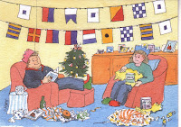
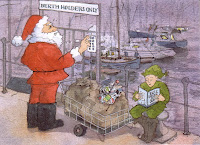
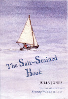

{kind=link}

The end and beginning of every year brings a blizzard of statistics. Here are some that have come raining from the digi-cloud in the More-Than-Twelve-Days since Christmas 2011. Note to self: get that tree out of the house Julia, but it’s okay to leave the mistletoe a little longer. You never know your luck …*STATISTIC*More than one million e-readers and more than half a million tablet devices were received as gifts over Christmas with Amazon and Apple the leading suppliers of e-readers and tablets respectively. A YouGov survey suggested that one in every 40 adults in the UK received an e-reader as a Christmas present – 92% of them were Kindles. I call this illustration 'The Woman Who Didn't Get a Kindle'. If I tell you that the white flag with the blue central square is S andthe striped blue and yellow flag is G, I expect you can work out the artist's message.
Kobo, however, whose e-readers are now sold in W.H.Smith and Asda, put out a jubilant press statement claiming the ‘highest e-book download rate in Kobo history’ and ‘a ten-fold worldwide increase in new customers’. ‘This holiday season broke every foreseeable record for Kobo,’ they huzzahed. Depends where you start, doesn’t it? W.H. Smith only began selling the e-readers in October and Asda wasn’t stocking them until December 9th. So it’s possible that next year’s results will be rather more meaningful: Asda + Kobo vs Tesco + Kindle. Anyone taking bets?
*STATISTIC* 61% of those Kindle recipients were women. Yes, I got one. And they were twice as popular with the over 55s than with the 18-24s. Okay, I tick that box as well. What it is to be Ms Average – can I possibly monetise this? More than 640,000 tablets were given to adults – 72% of them were Apple iPads. 60% of the iPad recipients were also women but here our household bucks the trend as it was my partner, Francis, who was the lucky one.
The tablet was a brilliant present as he’s convalescing from a back operation. “Don’t lift anything heavier than a half-kettle of water,” the surgeon commanded. It wasn’t so clever of me to have bought him the hardback version of Claire Tomalin’s new 576 page biography of Dickens and I therefore felt it my duty to read it on his behalf. It’s a marvellous book, though the pricing might make High Street booksellers seethe: £30 RRP and the independents won’t be able to discount much but it’s £14.84 currently on Amazon and £17.99 in the Kindle and ePub editions. Not so surprising that The Bookseller reports printed book sales as having fallen throughout 2011 – down £100 million over the year – and its post-Christmas pages are littered with despairing booksellers announcing that they are closing down.
**The statistic that hit the national headlines was Harper Collins’s announcement that they sold 100,000 ebooks on Christmas day. Presumably this was when all those 55-year old women had unwrapped their Kindles. Hachette quickly followed suit to say they’d sold 100,000 ebooks as well. And just to rub salt into the High Street’s wounds they pointed out that this was a 400% sales increase than on Christmas Eve when the shops had still been open.
***One of the most heartening assertions I’ve come across – though it’s not really a statistic – is the observation made towards the end of the YouGov survey; ‘It appears e-reader owners, at least in the early days, buy more e-books than the printed books they purchased before acquiring an e-reader.’
So what have the new e-recievers been buying? Among the top three Kobo titles was Saving Rachel by John Locke – previously celebrated as the first self-published author to sell over a million Kindle downloads. Another self-published success was Kerry Wilkinson who sold the 100,000th copy of Locked In on Christmas Eve – then spent the remainder of the holiday period watching the sales-success of its sequels. In an interview with Futurebook Kerry said that he ‘tried to think like a reader not a writer” and therefore priced Locked In, the first in his series at £0.98. He calculated that buyers would be willing to pay more for the sequels as they would know by then that they were going to enjoy what they were purchasing. Kerry asked £1.88 for Vigilante (book two) and a towering £2.79 for the third volume, Woman in Black. By Boxing Day he was a happy man.
‘Finding a needle in the digital haystack’ is the phrase which has stuck in my mind from this shower of seasonal statistics and that’s the challenge for all of us at Authors Electric during 2012. But did you know that there are ONE HUNDRED MILLION active blogs?
**The statistic that hit the national headlines was Harper Collins’s announcement that they sold 100,000 ebooks on Christmas day. Presumably this was when all those 55-year old women had unwrapped their Kindles. Hachette quickly followed suit to say they’d sold 100,000 ebooks as well. And just to rub salt into the High Street’s wounds they pointed out that this was a 400% sales increase than on Christmas Eve when the shops had still been open.
***One of the most heartening assertions I’ve come across – though it’s not really a statistic – is the observation made towards the end of the YouGov survey; ‘It appears e-reader owners, at least in the early days, buy more e-books than the printed books they purchased before acquiring an e-reader.’
So what have the new e-recievers been buying? Among the top three Kobo titles was Saving Rachel by John Locke – previously celebrated as the first self-published author to sell over a million Kindle downloads. Another self-published success was Kerry Wilkinson who sold the 100,000th copy of Locked In on Christmas Eve – then spent the remainder of the holiday period watching the sales-success of its sequels. In an interview with Futurebook Kerry said that he ‘tried to think like a reader not a writer” and therefore priced Locked In, the first in his series at £0.98. He calculated that buyers would be willing to pay more for the sequels as they would know by then that they were going to enjoy what they were purchasing. Kerry asked £1.88 for Vigilante (book two) and a towering £2.79 for the third volume, Woman in Black. By Boxing Day he was a happy man.
{kind=link}

‘Finding a needle in the digital haystack’ is the phrase which has stuck in my mind from this shower of seasonal statistics and that’s the challenge for all of us at Authors Electric during 2012. But did you know that there are ONE HUNDRED MILLION active blogs?
{kind=link}

Thanks to Claudia Myatt, illustrator of my two novels, The Salt-Stained Book and A Ravelled Flag, for sketching Santa as he tackles the electronic gate-keepers. (His little helper, by the way, is reading Elf and Safety.)
Happy New Year from Julia Jones